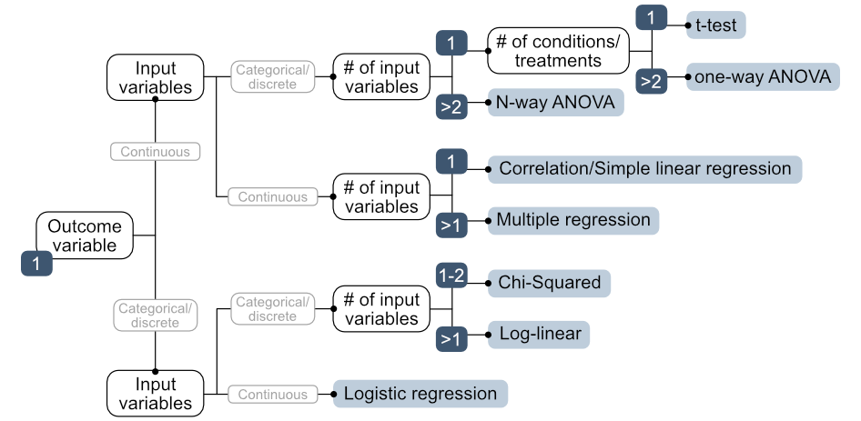
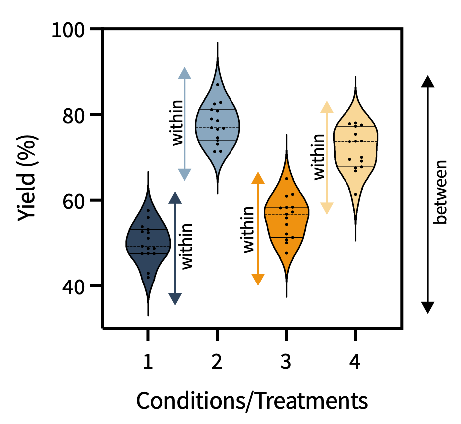
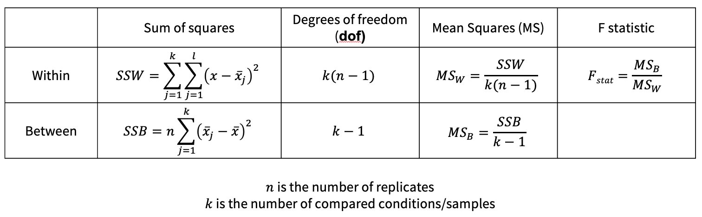

10. Comparing more than two samples
This session is about comparing more than two groups with ANOVA (and post-hoc tests), and running that workflow in Python with pingouin.
Code set up
Statistical tests for comparing more than two samples
Choosing a Statistical Significance Test
So far we have seen the the t-test, which is specifically for comparing data that meet the following criteria:
- there is a single outcome variable that is continuous (such as percent yield),
- the input variable is categorical or discrete (such as the catalyst type),
- the data are from a normally distributed population,
- the desired comparison is between one sample to a standard or two samples.
However, there are many more statistical significance tests. The choice of statistical test depends on the types of variables involved. The decision tree below summarizes the options for data in which the following criteria are met:
- a single, continuous outcome variable and
- a normal distribution (we will discuss violations of this in session 11).

Key terms:
- Outcome variable (dependent variable): what you are measuring (e.g. reaction yield)
- Input variable (independent variable): what you are manipulating (e.g. solvent identity, catalyst identity, temperature)
- Conditions / treatments: the specific values of the input variable being compared (e.g. five different solvents = 5 conditions)
In this session, we are going to focus on the top branch that has one outcome variable, which is continuous, and input variables that are discrete or categorical. This branch includes the t-test, one-way ANOVA, and N-way ANOVA.
| Situation | Test |
|---|---|
| 1 continuous outcome, 1 input variable, 1–2 conditions | t-test |
| 1 continuous outcome, 1 input variable, >2 conditions | One-way ANOVA |
| 1 continuous outcome, >1 input variable, | N-way ANOVA |
What is ANOVA?
ANalysis Of VAriance (ANOVA) compares means across multiple conditions by decomposing variance into two components:
- Within-condition variation: the scatter among replicates within each condition, which can be attributed to measurement uncertainty and random variation (or uncontroled variables)
- Between-condition variation: the differences between condition means, which can be attributed to the factor being tested

ANOVA computes the F-statistic (analogous to the t-statistic of the t-test): the ratio of between-condition variance to within-condition variance. If this ratio is large (the conditions differ more than expected from chance), H₀ is rejected.
\[F_{stat} = \frac{\text{Variance between groups}}{\text{Variance within groups}}\]

ANOVA outputs a p-value (just like the t-test). A p-value from ANOVA indicates the probability of observing an F-statistic at least as extreme as the one obtained, if the null hypothesis were true. A small p-value means the observed group differences would be unlikely under the null hypothesis; it does not quantify the probability that the means differ.
To work with this dataset, we will have to reshape the dataframe from a wide dataframe to a long dataframe. Please see the example below. The code is melt from pandas.
Once we have our long, melted dataframe, we can perform ANOVA with pingoin.
From the ANOVA p-value, you can only learn about the group means collectively to identify if there is one condition that differs. You cannot determine which condition differs from the others.
If we obtain a statistically significant p-value from the ANOVA test, how can we identify the condition(s) that are statistically significantly different?
Post-Hoc Tests: After a Significant ANOVA
NOTE: if the ANOVA p-value is not below the threshold, you should not perform a post-hoc test!!!
If ANOVA finds a significant effect, it tells you that at least one condition is different, but not which ones.
Post-hoc tests identify which specific pair(s) of group means differ significantly, while controlling for family-wise error rate across all the comparisons.
For the ANOVA test, there are two appropriate post-hoc tests: Tukey’s and Games-Howell.
Tukey’s test: assumes similar variances and equal sample sizes.
Games-Howell test: more robust when variances or sample sizes differ between conditions.
We have not yet discussed how to test differences in variances, but this will be covered in the next session.
The output of a post-hoc test in pingouin also indicates the effect size for the pair-wise comparisons.
Below is an example of the Tukey test with pingouin.
This remainder of this session will be released later in the semester.
In Person
TBD